The national parks in proximity have similar features. For example, Zion, Canyonlands, Capitol Reef, and Monument Valley share similar landscapes. Therefore, visiting all of them in one trip is not very satisfying. My weekly itinerary ensured that I experienced diverse environments.
In the summer, most national parks are fully open, making it the best time for visit. However, rising temperatures can make afternoons excessively hot and challenging for outdoor activities. To beat the heat, I always scheduled hikes for early mornings and evenings, reserving afternoons for naps and driving to viewpoints.
Week 1
Starting from Las Vegas, my first week itinerary led me to Red rock canyon national conservation area,
Death valley national park,
Zion national park,
Bryce canyon national park,
Grand staircase-escalante national monument,
Glen canyon national recreation area,
Horseshoe bend, and
Grand canyon national park.
Locations for week 1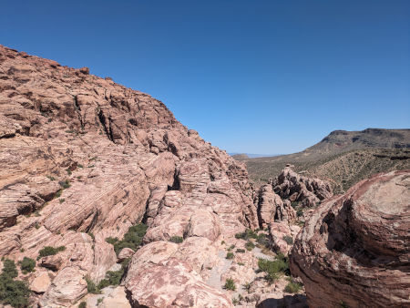A viewpoint on the scenic drive of Red Rock Canyon National Conservation AreaDay 1: I started my trip with the 13-mile scenic drive through Red Rock Canyon. It offers numerous viewpoints and lies en route to Death Valley. During peak season, reservation is required to access the scenic drive. Fortunately, I was allowed without a reservation after purchasing the annual pass at the entrance station. Check the latest information at their website before visiting.
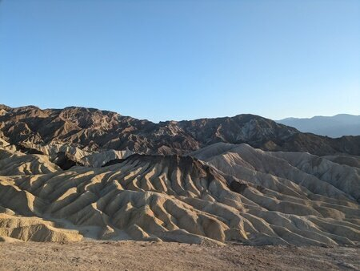Zabriskie point in Death valleyDay 1-2:Death Valley is the hottest place on Earth, making early morning or late evening the best times to visit. I arrived in the evening, perfect for a short hike to Dantes View. This easy hike offers a stunning bird’s-eye view of the white salt flats, especially at sunset. Next, I headed to Zabriskie Point, the most photographed spot in Death Valley, shaped by powerful water erosion. I spent the night at the Furnace Creek Visitor Center, which has 24-hour access to restrooms and drinking water.
The following morning, I woke early for a quick hike to Badwater Basin, the lowest point in North America. I then completed a nearby 1.6 km hike to the Natural Bridge. The road to the trailhead is unpaved but easily navigable at a slow pace.
As temperatures began to rise, we spent the rest of the morning and afternoon sightseeing Artists Palette,
Mesquite Flat Sand Dunes, and Ubehebe Crater. These three sites require little to no walking, although I did trek about a mile on the sand dunes to find a picturesque spot.
Tip: Visit the sand dunes early in the morning before anyone else to see pristine sand dunes free of footprints.
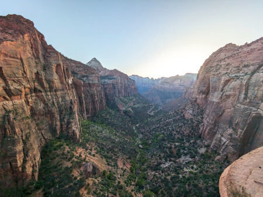Observation point in Zion national parkDay 2-3: Due to the hot weather, I decided to move to Zion National Park. I recommend driving to Zion while it's still bright because the scenic views while approaching the park are out of this world. Zion National Park has a lot to offer but can be crowded during summer. Parking fills up quickly during the day with only one public lot near the entrance. A shuttle service helps visitors access different parts of the park.
Upon arrival, I hiked the
Canyon Overlook Trail (moderate) while there was still some light. On the second day, I hiked the
Upper and Middle Emerald Pool Trail (moderate). During summer, the trailhead can only be reached on foot or by shuttle bus. Later, I visited the
Riverside Walk (easy) leading to
The Narrows trailhead (difficult). The Riverside Walk is fairly shaded by the mountains, so it can be done in the afternoon.
Extras: Two popular and challenging trails in the park are Angel's Landing and the Narrows. To hike the Angel's Landing trail, you need a permit, which is granted via a lottery system. Some people try the hike without a permit, hoping for some no-shows. The Narrows, a river hike, doesn't require a permit, but proper gears are necessary for safety. There is a gears rental shop near the park entrance.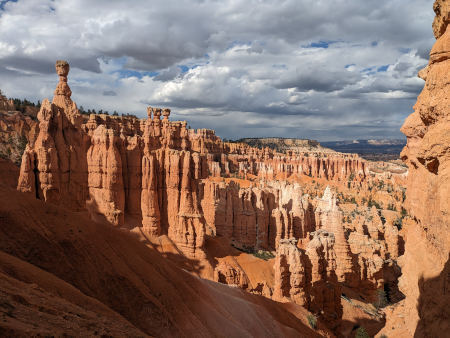Ampitheathre in Bryce canyon national parkDay 4:Bryce Canyon National Park is at a high elevation, making early mornings and late evenings cold even in summer. During my visit in late May 2024, temperatures dropped to 1°C at night. In the morning, I hiked the Queen's garden trail (moderate) while watching the sunrise. Late afternoon, I hiked the Navajo loop (moderate) and Peekaboo loop trail (moderate) together. Finishing both trail can be strenuous on a hot and sunny afternoon. More hiking options can be found on the park website. Popular sightseeing spots include Bryce point,
Inspiration point,
Sunset point, and
Sunrise point. Also, there's a southern scenic drive that leads to
Rainbow point,
Yovimpa point,
Ponderosa canyon, and
Nautral bridge.
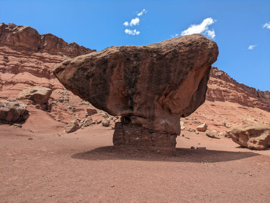Balanced rock in Glen canyon national recreation areaDay 5: Starting from the Kanab visitor center of the Grand Staircase-Escalante National Monument, there's a loop going all the way to the city of Page and returns back. You can ask for a map at the visitor center. This loop contains a lot of scenic spots. Notable points include Historic Navajo bridge, Glen canyon national recreation area, Horseshoe bend, and Toadstool hoodoos trail. If you visit the Glen canyon, I would recommend the Cathedral wash trail (moderate). This trail is risky in some areas and will challenge you to find clever ways to overcome obstacles. More hiking options in Glen canyon can be found on the park website.
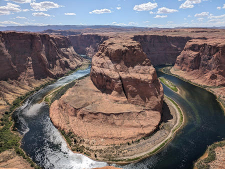Horseshoe bendHorseshoe Bend is managed by the city of Page and has a $10 entrance fee per vehicle. A short trail leads from the parking lot to the viewpoint. Though wind and sand can be challenging, the stunning view makes it a must-visit spot. On the way to horseshoe bend, one can also visit Antelope canyon, a slot canyon. The Antelope canyon requires pre-booking and costs around $80. Alternatively, one can visit the slot canyons in Grand staircase national monuments.
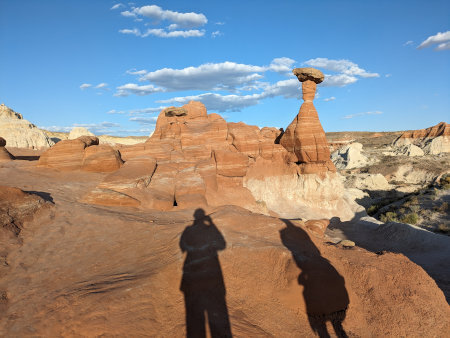Toadstool hoodoos
Grand Staircase National Monument, managed by the Bureau of Land Management, covers a large area. They are known for its slot canyons. Some of the slot canyons require a $5 permit fee and can be challenging and dangerous to hike. This blog provides comprehensive information on different slot canyons in the area. Alternatively, consider the free Toadstool hoodoos trail (easy).
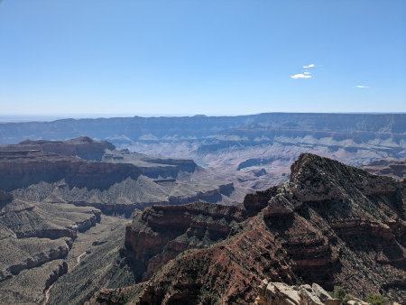Grand canyonDay 6-7: The South and west rims of the Grand canyon are more developed and crowded, often visited by tour operators. The north, south, and east rims of the Grand canyon are operated by the NPS and can be accessed with an annual pass. The west rim, run by a private entity, has a separate entrance fee of $70-$90 depending on add-ons, and lacks hiking trails. It offers only three viewpoints accessible by shuttle. I had previously visited the west rim in 2022 on a day bus tour and didn’t want to pay the entrance fee again. This time, I chose the north rim for its higher elevation and cooler summer temperatures.
There are two main scenic drives in the north rim ending at Point Imperial and Cape Royal.
Recommended hike in the north rim of Grand canyon national park: Bright angel point (easy), North Kaibab trail (difficult). The North Kaibab trail continues all the way to the south rim. So, plan how far you want to go in the canyon as the trail goes downhill and climbing back can be challenging in hot weather. More hiking options can be found on the park website.
Week 2
Starting from Sacramento, I visited Yosemite national park,
Sequoia national park,
Kings Canyon national park,
Pinnacles national park,
Elephant seal overlook, and
Muir Woods national monument.
Locations for week 2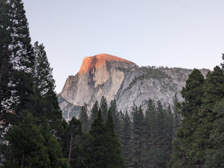Half dome in Yosemite national parkDay 1-3:Yosemite National Park is highly popular, attracting both tourists and locals, leading to large crowds in summer. Expect long car queues at park entrances during the day. To avoid delays and potential entrance reservation requirements, arrive outside operating hours. Many scenic spots are accessible by car or overcrowded shuttle buses. I found it convenient to use my car. Recommended hikes in Yosemite national park: Lower Yosemite Fall (easy),
Vernal Fall (moderate),
Nevada Fall (difficult),
Sentinel Dome (moderate) and
Taft Point (moderate). More hiking options can be found on the park website.
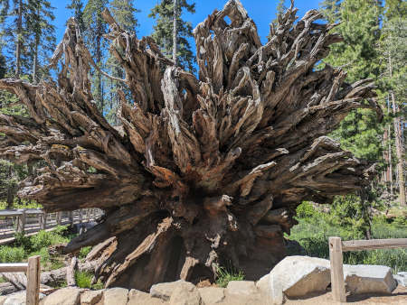A fallen tree in Sequoia national parkDay 4: Having already visited a Sequoia grove in Yosemite National Park, I opted to explore different viewpoints in Sequoia and Kings Canyon National Park. Recommended hike in Sequoia National Park is Moro Rock. More hiking options can be found on the park website.
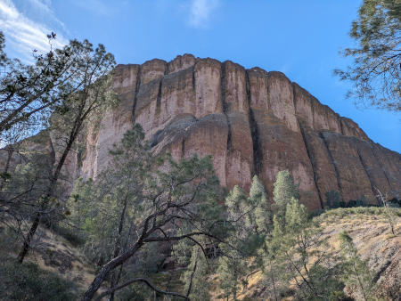Pinnacle national parkDay 5: For me Pinnacle National Park was a bit disappointing. If it were up to me, I would not classify it as a national park. In case you decide to visit it, I would recommended the Balconies Cliffs-Cave loop (moderate). More hiking options can be found on the park website.
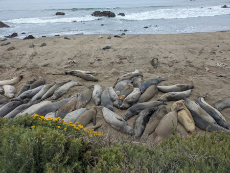Elephant seal overlookDay 5-6: After seeing many mountains, we realized we needed a change of scenery, so we visited the charming city of Santa Barbara. What I liked most was its simple yet elegant architecture. The city has numerous peaceful beaches for relaxation. While there are tourist attractions in the city, many are expensive and overrated. Later, we drove to a few viewpoints on our way to San Francisco to visit a friend. We also stopped by an
Elephant Seal Overlook.
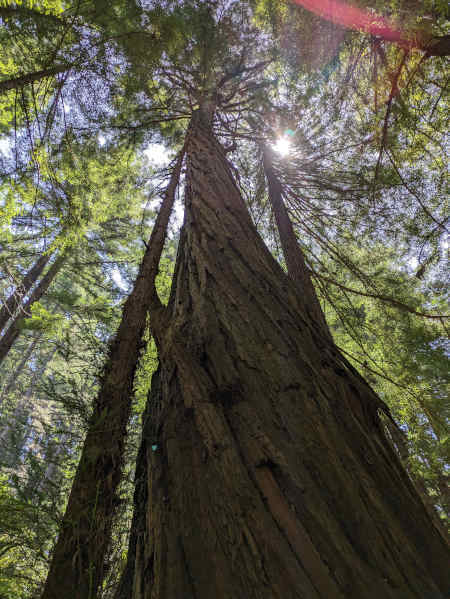Muir woodsDay 7: While in San Francisco, we decided to visit Muir Woods National Monument. The road to Muir woods also leads to the iconic Golden Gate Bridge, a landmark synonymous with San Francisco. Muir woods has limited parking and requires reservations during peak seasons, costing $10. This may seem pricey for what it offers. Its proximity to San Francisco might justify the cost, but I wouldn't recommend it unless you're also visiting the Golden Gate Bridge and have plenty of time to spare.
Week 3
Starting from Salt Lake City, I toured Yellowstone national park,
Grand Teton national park,
Arches national park, and
Canyonlands national park.
Locations for week 3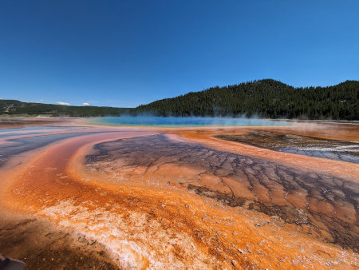Grand prismatic spring in Yellowstone national parkDay 1-4:
It takes about a 5-hour drive from Salt Lake City to reach Yellowstone National Park. On the way, you can make a rest stop and see the
Idaho Falls. Yellowstone covers a vast area with its major park road forming a figure 8. Although Yellowstone is famous for its geysers and springs, it also features a variety of landscapes and wildlife. Bisons can be easily spotted by the roadside while carrying binoculars can help in spotting bears. Recommended hikes in Yellowstone national park: Grand canyon of the Yellowstone (easy),
Avalanche Peak trail (difficult),
Mud volcano (easy),
Mammoth hot springs (easy). More hiking options can be found on the park website.
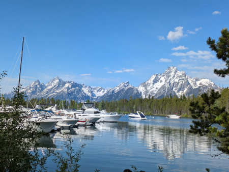Grand Teton national parkDay 5: Having explored many national parks on Canada's west coast, I found Grand Teton National Park underwhelming. I hiked to the Inspiration Point out of boredom, but wouldn't recommend it. The initial trek through the forest was unremarkable. Ferries provide a shortcut but are costly. However, seeing a grizzly bear (I did not buy a bear spray), elk, and fox on my late evening return made the hike fruitful. More hiking options can be found on the park website.
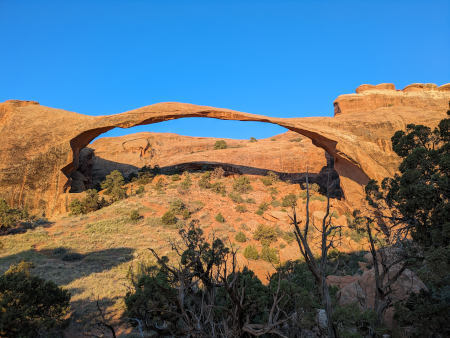Landscape arch in Arches national parkDay 6: After visiting Grand Teton, we decided to head to the other side of Salt Lake City and explore Arches National Park. This park is a natural wonder, with arches that seem almost impossibly formed without human intervention. However, after seeing several of the main arches, the experience can start to feel somewhat repetitive. Recommended hikes in Arches national park: Delicate arch (moderate),
Landscape arch (easy),
Double arch (moderate). More hiking options can be found on the park website.
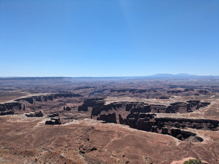CanyonlandsDay 7:
Finally, I decided to return to Salt Lake City when I realized there was another national park on the way back.
Canyonlands National Park combines features from Zion, Bryce Canyon, and Grand Canyon National Parks. This is why I advise against visiting all the national parks in the Utah region at once, as similar parks can make the trip feel monotonous. Canyonlands is mostly devoid of vegetation and trees, making it challenging to stay outside for extended periods. Hence, I drove through its scenic points for a few hours and left.
I used Frontier's Go Wild one-month pass to visit Las Vegas, Sacramento, and Salt Lake City. The pass offers cheap flights but can only be booked one day in advance and has blackout dates. Moreover, some of the routes can not be booked using Go Wild pass. I always bought a carry-on bundle for blankets. In the middle of my trip, Frontier hiked the price for a carry-on from $30 to $40.
Frontier also supports TSA Pre for expedited security checks. TSA Pre is only available for US citizens but as a foreigner, one can apply for Global Entry which includes TSA Pre. The membership fee for TSA Pre and Global Entry can be reimbursed by premium credit cards. A major drawback for choosing Frontier flight is their seats don't recline, making them uncomfortable but bearable for short flights. While booking, I always chose airports with good lounge facilities. Airport lounges are a great place to relax with complementary food, drinks, shower facilities and more. This also provided me a well-deserved respite from uncomfortable Frontier flight seats. Some membership programs like Priority pass,
Dragon Pass,
Dreamfolks,
Diners Club International,
Lounge Key provide complementary access to airport lounges. Some of these memberships can be obtained as a complementary benefit on premium credit cards.
Which car to rent?
I am 5'11" and I could sleep comfortably in a standard SUV (Hyundai Santa Fe). In an intermediate SUV (Toyota RAV4), my foot was hanging out, so either I had to sleep diagonally or put some luggage below my foot. Both of these options can accomodate two adults for sleeping. For car rentals, consider weekly or monthly bookings for discounts. Registration desk for renting cars often have long queues during peak hours. Fill up your tank before entering a national park to save on fuel costs; fuel inside parks tends to be expensive. Use Google Map to find cheaper petrol stations between parks.
What to pack?
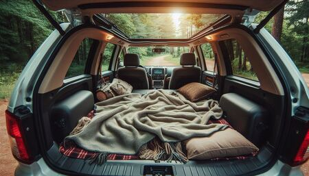Car camping in a SUV (Source: Microsoft Image Creator)
For car camping, it's recommended to carry a thick blanket for bedding. Depending on the weather, additional blankets may be needed. Bring a thick jacket, as some national parks are at high elevations and can get cold at night. Jackets can also serve as pillows.
Sleeping in a sleeping bag during flight layovers (Source: Microsoft Image Creator)You might want to carry a sleeping bag as it comes handy for sleeping on airports. Pack toiletries such as soap, shampoo, moisturizer, and sunscreen. For sun protection, carry a brimmed hat, preferably with a chin strap. Bring multiple reusable water bottles and refill them at water fountains available at visitor centers, Walmarts, and gas stations.
Insurance
Most rental companies offer car damage waivers and third-party liability insurance, but these options can be expensive. Instead, consider using a credit card that includes free car insurance, such as those from Capital One, Chase, or American Express. Alternatively, a AAA membership provides these insurances along with additional benefits at a better price.
Visiting national parks involves long drives on challenging roads, so it's advisable to have two types of insurance: one for car damage and one for third-party liability. Some states require minimum coverage for these categories. While insurance for theft of personal property is available, it's better to keep valuables secure. Filing an insurance claim and dealing with paperwork can be tedious, so drive carefully and take breaks when needed.
Toll payment
You might encounter toll booths while driving. Rental companies can charge your credit card for tolls up to a month later, often without a detailed breakdown, and they may add administrative fees. To avoid these extra charges, try to avoid toll routes. Some toll stations have cash lanes; use them if available. Alternatively, you can purchase your own toll tag and place it on the car dashboard. Most toll tags work in multiple states.
EZ Pass
I used EZPass-New York with a pay-as-you-go option. To apply, I had to provide details of a checking bank account and a credit card. There was no additional cost for the toll tag or monthly maintenance fees, but some states may have these charges. You can apply for a tag from any state, so choose the one that best meets your needs.
What to eat?
Tortillas, canned foods, spreads, and ready-to-eat noodles. One can usually find hot water at gas stations or grocery stores in national parks. Some of these places also have microwave facilities. Plastic utensils are available at Walmart, gas stations, or delis. Bring fruits, trail mixes for easy snacking. If you can buy a portable gas stove and cylinder, you can also cook regular meals. I didn't try this due to time constraints and laziness. Plan ahead and shop outside national parks as grocery stores inside charge more for the same items. Buying from Walmart allows returns within 90 days, so consider purchasing extra food for backup.
Maintaining hygiene in car
Bring a couple of trash bags for waste and dirty laundry. Use a smaller bag for trash to prevent attracting flies during the summer. Trash bins are readily available, but laundry machines in national parks are a rare find.
National parks
Fees and reservation
Some national parks require reservations for crowd control, in addition to entrance fees. For visits to multiple national parks, consider buying an annual pass. The annual pass can be bought at any of the entrance stations of major national parks, recreation area, national monuments, etc. Purchasing offline is cheaper and faster. Alternatively, you can enter national parks for free and without reservations by entering outside of their working hours.
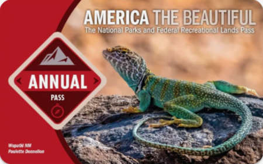Annual pass for national parks in US
Map/guides for national parks
Always download offline maps for driving navigation before visiting a national park. Network connectivity inside the national parks are mostly limited. Check the National Park Service website and app for park info. The app allows offline access to information on national parks once downloaded. Upon entry, you'll get maps and a newsletter with latest updates. You can also get the same at any of the visitor centers. For more details about sightseeing and hiking, talk to a ranger at visitor centers. AllTrails offers a comprehensive list of trails, but requires a subscription for offline use and there's limited network inside parks. I recommend downloading Maps.me in advance for free navigation while hiking.
Shower and restrooms
Most national parks offer showers within or near the park. For details, ask a ranger at the visitor center. The facilities range from basic, coin-operated showers with limited time to showers with unlimited time and free toiletries. You can also find showers at truck stops, RV campsites, fitness centers, and airport lounges. Restrooms are available at visitor centers and trailheads, but trailhead restrooms do not have water.
Major expenses
Items
Cost
Car rental (1 week, without insurance)
$250-$320
Car insurance (per day)
~$20
Fuel (per day)
$10-$50
Food (per day)
$20-$50
Annual national park pass
$80
Flights
~$400
Bus/car to airport
~$300
Author's note
I completed this 3 week trip from mid-May to mid-June of 2024. If you find any errors or would like to add any information that I missed, do not hesitate to email me. Latest contact information is available on the homepage.